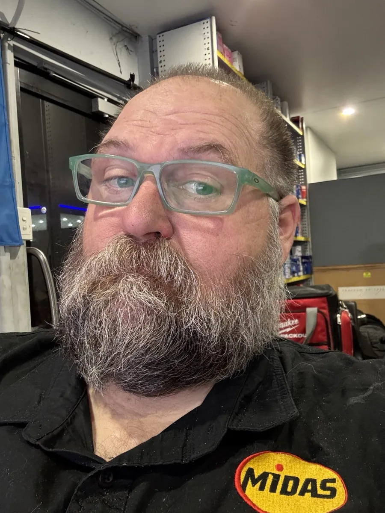
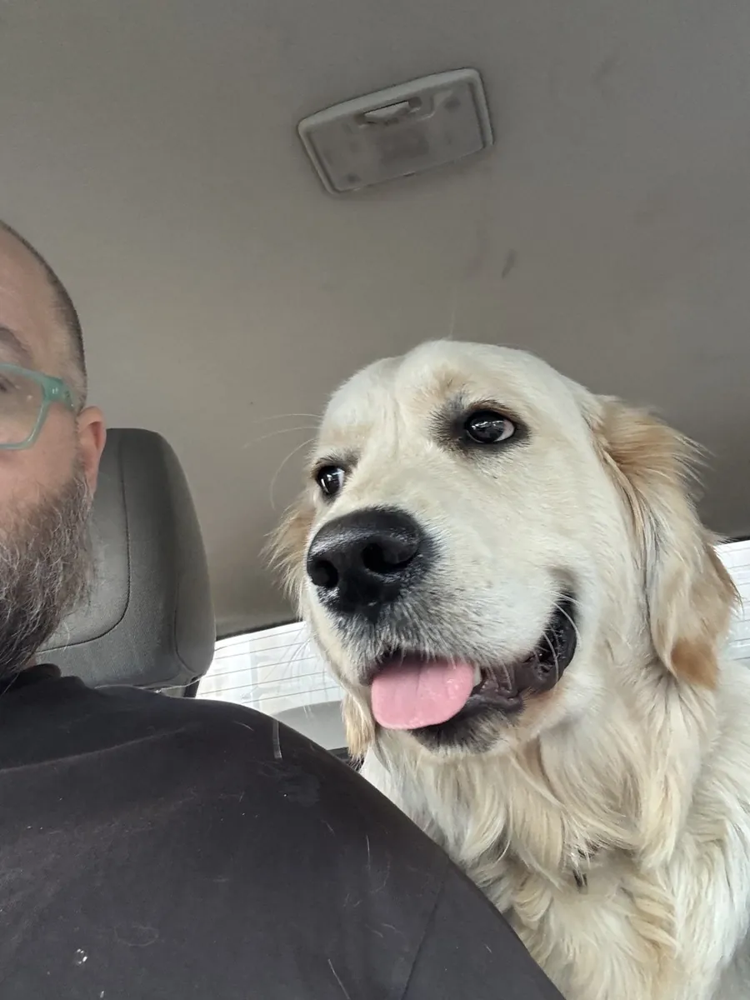

The story so far
I'm Adam. I grew up at a racetrack, spent twenty-odd years running them, then went back to the tools as a mature-age apprentice. Somewhere in there a hospital bed and a bored phone turned into The Fat Mechanic, and a foot I ignored for too long taught me the hardest lesson of my life.
-
The early days
Winton Raceway, Benalla
Dad took Winton from a kitchen-table operation to an internationally recognised circuit. My brother Matthew and I grew up there. I started sweeping floors, picking up rubbish and cleaning toilets.
-
Up through the ranks
Running the show
Sales and marketing, operations, and eventually Executive Officer at Winton. Along the way we took on Wakefield Park in NSW, and I did a stint as stand-in manager there too.
-
2015
Lakeside Park, QLD
Moved north to be Venue Manager at Lakeside. New state, same love of loud cars.
-
2017
Back to the tools
Walked away from the office and started a mature-age apprenticeship as a light vehicle mechanic. Turns out I'd rather be under the car than in the boardroom.
-
The COVID years
The Fat Mechanic is born
A nasty infection put me in a hospital bed with a real chance of losing my left foot. Bored out of my brain, I started posting on TikTok. People liked the honesty, the humour and the dodgy car stories.
-
Five years
The fight I didn't take seriously
That infection started as an ulcer on my foot, and with diabetes in the mix it never properly healed. For five years I battled it. I went into septic shock five times and somehow survived every one without ever going to see a doctor. That's not tough. That's silly.
-
Six months in hospital
The foot's gone. I'm still here.
It finally caught up with me. Half a year in hospital, and they took my left foot. It very nearly took me with it.
-
Today
Still livin' large
A little crooked in the stance, but alive and here to tell the story. Running Midas Ipswich, putting on grassroots racing with Tampered Motorsport and Budget Enduro, and making videos with Oscar supervising. 100K+ of you are along for the ride.